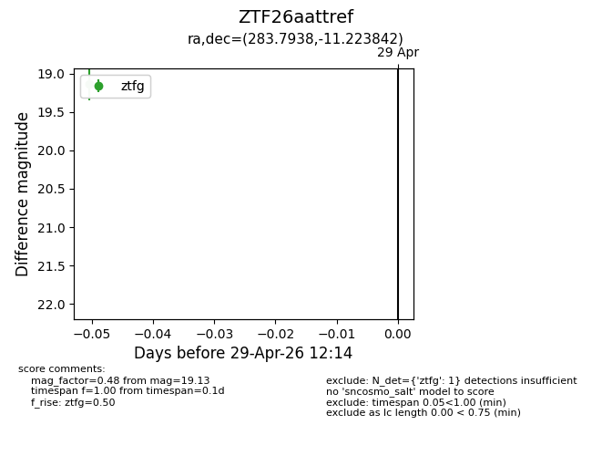
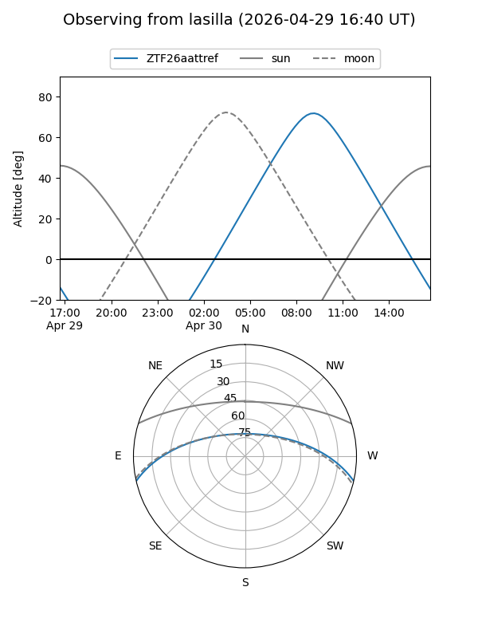
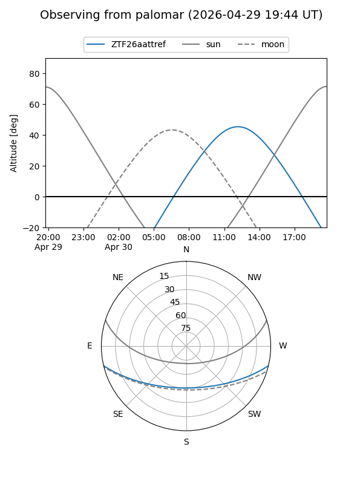

ZTF26aattref
Target ZTF26aattref at 2026-04-29 12:18
Aliases and brokers:
FINK: link
Lasair: link
ALeRCE: link
alt names
ZTF26aattref (ztf,fink_ztf)
Coordinates:
equatorial (ra, dec) = 283.7938,-11.22384
equatorial (HMS+DMS) = 18:55:10.52,-11:13:25.83
galactic (l, b) = (23.3288,-5.91132)
Flags:
Photometry:
last ztfg=19.13
1 ztfg detections
Lightcurve

Visibility


Additional plots